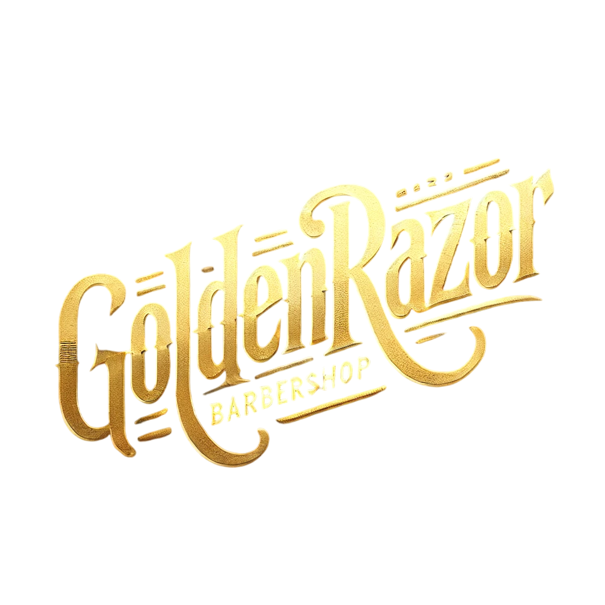

<section id="inicio" class="secao_inicio">
  <div class="box-inicio">
    <div class="img-text">
      <!-- Ajuste o caminho da imagem conforme sua estrutura -->
      
      <!-- Botão com routerLink corrigido -->
      <button class="button-agendar-inicio" routerLink="/login">AGENDE AGORA</button>
    </div>
  </div>
</section>